Social media
I helped run the project’s social media account as part of our community outreach.
See the project account ↗Muncie, Indiana · MYLP 2025–2026
Clothing, school supplies, and a little more peace of mind. A student-led project bringing everyday essentials to Northview Elementary.
A community project through the
Muncie Youth Leadership Program

Collection totals from the original project record. See the item breakdown below.
01 / The story
An everyday need became a shared project.
Our Closet brought six students together to collect clothing, shoes, school supplies, and personal care items for elementary school students in Muncie.
We partnered with Northview Elementary and placed the collected items in the nurse’s office, giving the school a place to keep essentials available for students and families.
Through the Muncie Youth Leadership Program, we practiced turning an idea into a coordinated effort: finding a partner, reaching donors, preparing items, and completing the delivery.
About the programOur purpose
Every child deserves to feel
confident and comfortable
at school.
Our project’s mission: provide elementary students with adequate and appropriate clothing.
02 / My contribution · Zaria Yin
My name is Zaria Yin. I helped run our social media, designed posters, and sorted donated items.
I helped run the project’s social media account as part of our community outreach.
See the project account ↗I designed posters for the project, contributing to the materials we used to spread the word.
Explore the outreach materials →I helped sort donated items, taking part in the practical preparation behind our collection.
View the sorting session ↗These were my contributions within a six-person team. The collection, delivery, and first-place group presentation were shared team achievements.
Outreach materials
Selected project posters and the social media record shown in our final presentation. These materials accompanied the outreach I helped with.
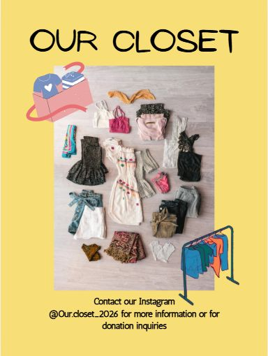
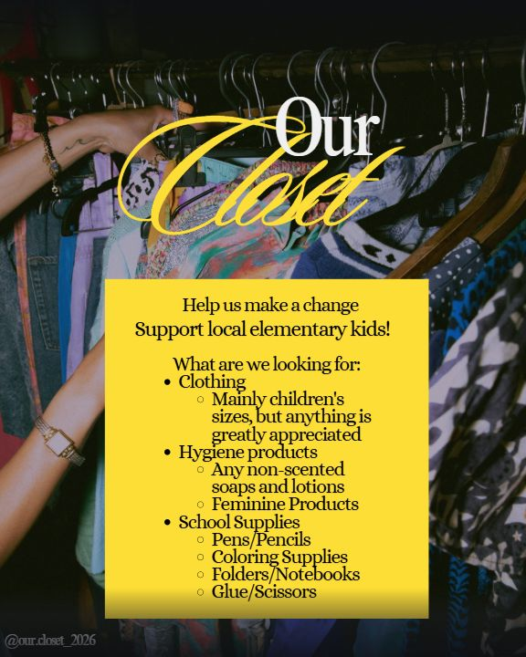
Poster design & social media
The posters introduced Our Closet, named the items being collected, and directed readers to the project’s Instagram account.
I contributed through poster design and helping run that account. The final presentation brings these outreach materials together.
See slide 8 in the final presentation ↗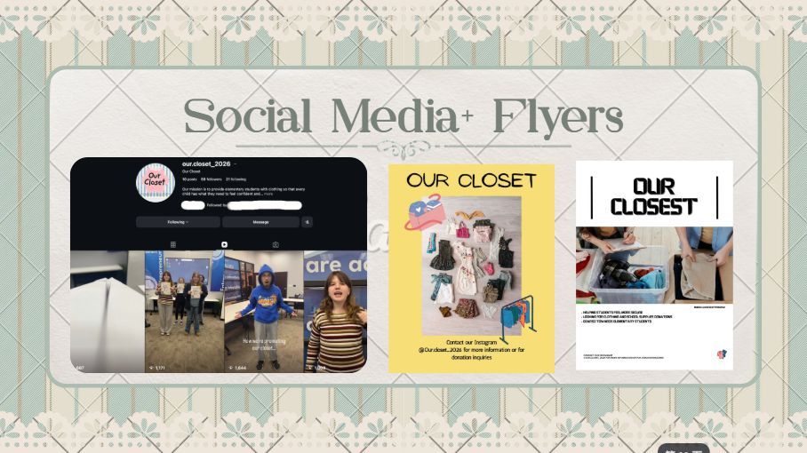
03 / From idea to delivery
Community outreach, practical planning, and a team willing to do the work.
We contacted local schools and businesses and connected with Northview Elementary. Team members visited the school to understand the available space.
Listening & outreachFlyers, Instagram posts, and signs around Ball State’s campus helped spread the word and invite donations from the Muncie community.
CommunicationTeam members divided the work: school visits, collection logistics, sorting, and purchasing supplies and detergent.
Teamwork & planningWe sorted clothing by type and size and gathered shoes, toiletries, and school supplies so items could be organized for the school.
Care & organizationThe collected items were transported to Northview Elementary and placed in the nurse’s office for students and families to access through the school.
Follow-throughAdditional project photographs show donations being prepared and items gathered at the school. The final presentation records delivery to Northview Elementary’s nurse’s office.
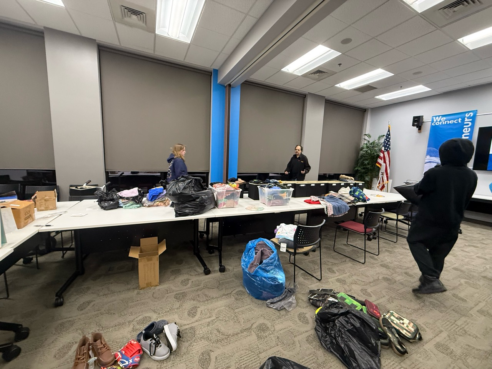
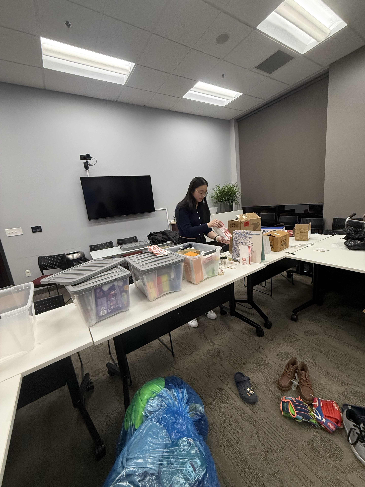
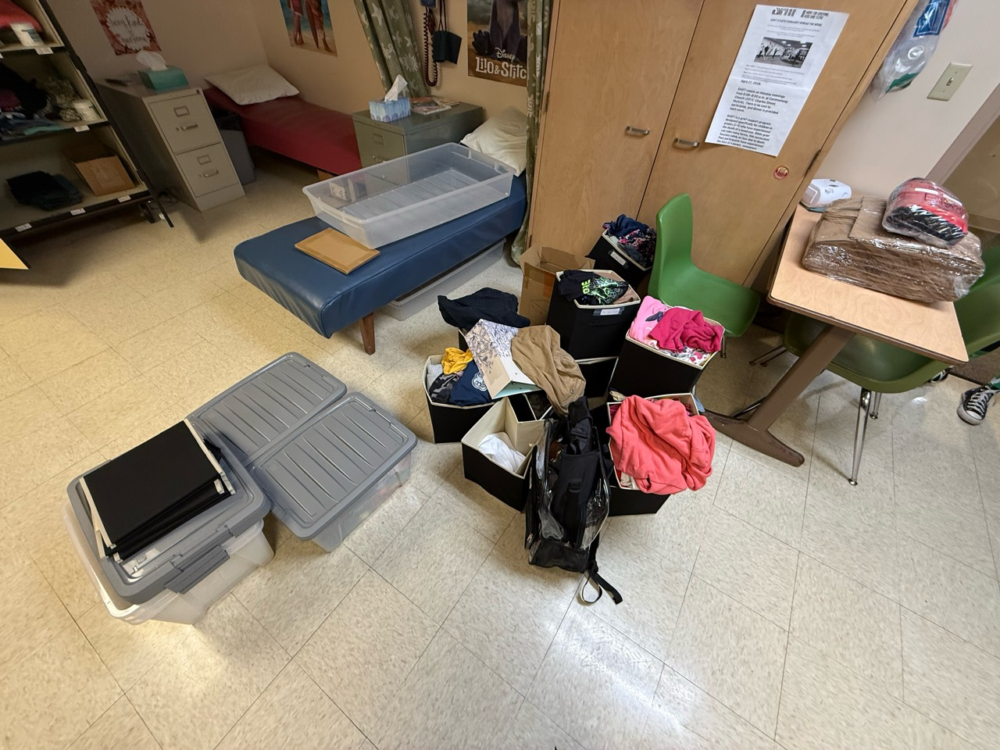
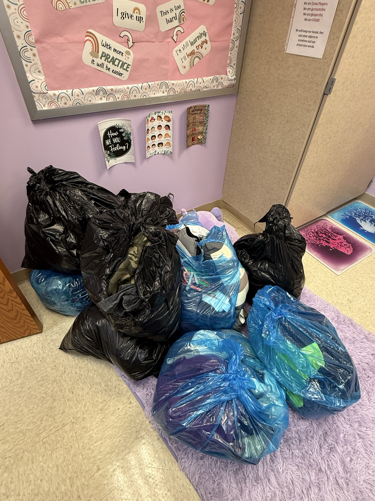
04 / The results
What we collected, where it went, and how the team’s work was recognized.
Clothing & everyday essentials
Clothing, shoes, lunchboxes, and other donated essentials collected from the Muncie community and delivered to Northview.
Toiletries included deodorant, shampoo, and soap. A separate item count was not recorded on the original website.
304 school supplies + 100 take-home bags.
| Item | Quantity |
|---|---|
| Folders | 120 |
| Notebooks | 24 |
| Scissors | 100 |
| Glue sticks | 60 |
| Take-home bags | 100 |
| Total items | 404 |
Items were placed in the nurse’s office, creating a school-based resource for everyday needs.
Our group received the highest presentation score in the Muncie Youth Leadership Program 2025–2026.
Read the program feedback →The collection figures describe materials collected. The original project record does not report the number of students served or subsequent distribution totals.
The project in photographs
Clothing arranged by size, paired shoes, and personal care items grouped in storage. Original photographs document the practical work behind the collection.


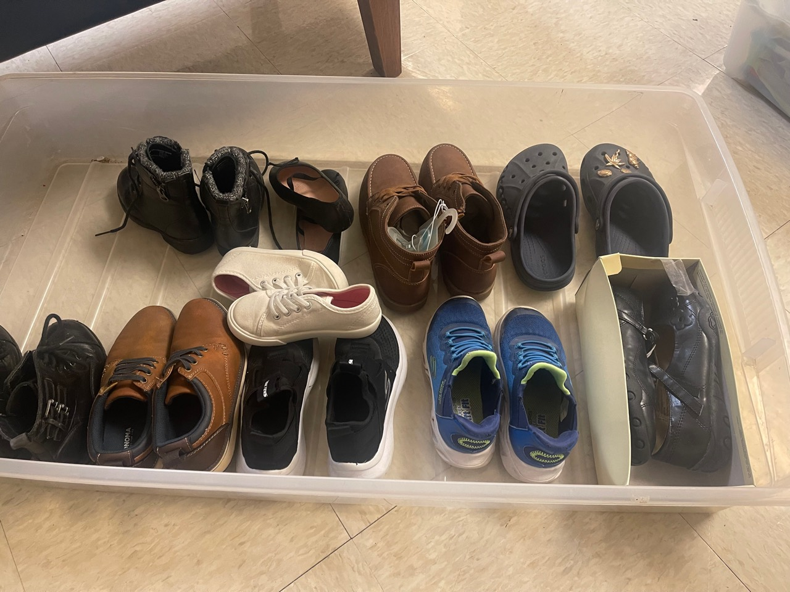
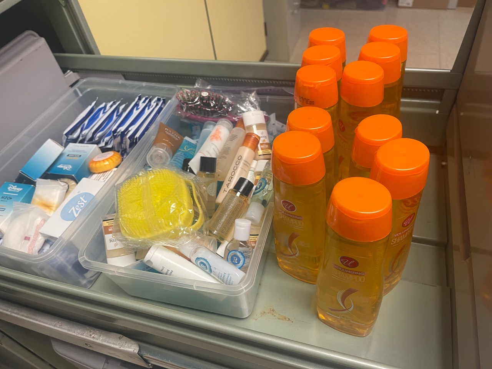
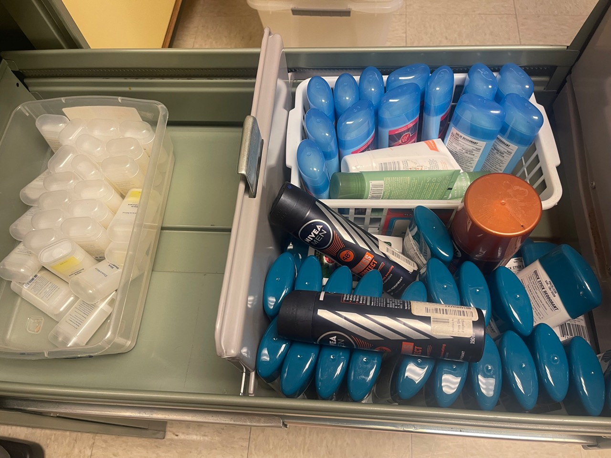
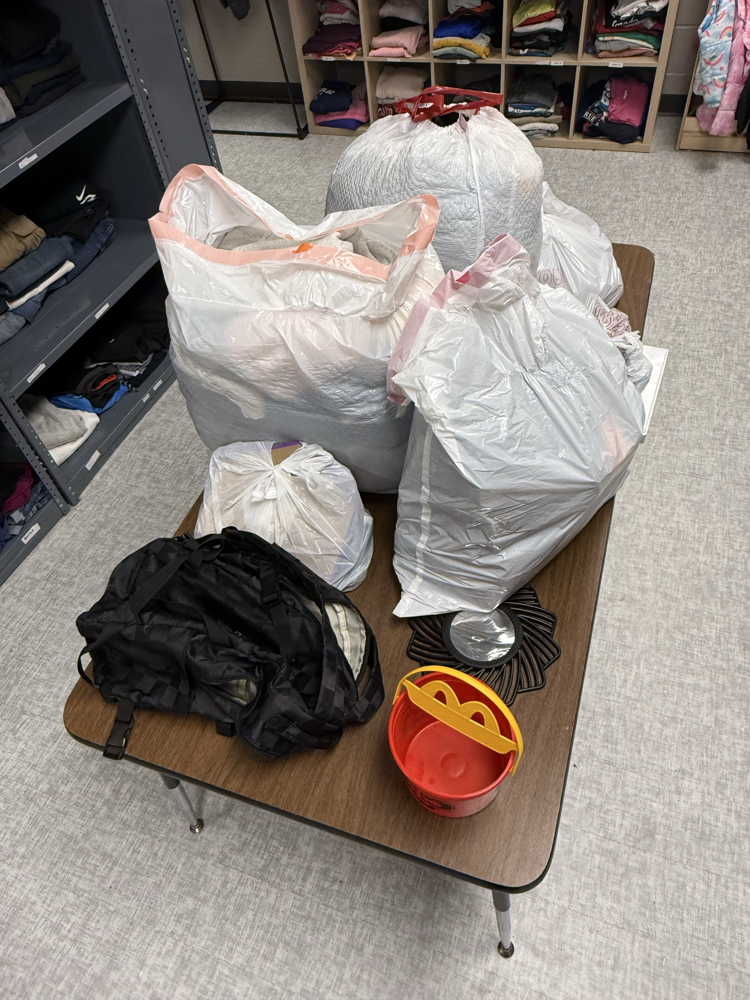
Thinking ahead
The team connected with Ball State’s Cardinal Closet to learn from an existing clothing resource and consider how a school closet could continue beyond MYLP. Delivering the items to Northview placed them where the school could make them available. The final presentation identified long-term sustainability as an open question.
05 / The people behind it
Our Closet was a team project across three local schools.

Muncie Central High School
JuniorBurris Laboratory School
SophomoreIndiana Academy
JuniorIndiana Academy
JuniorIndiana Academy
SeniorIndiana Academy
JuniorSchools and grade levels reflect the original 2025–2026 project record.
06 / Presentation & completion
Our group earned first place in the program’s group presentation. Program feedback confirms the winning project, photographs record the presentation, and my certificate records completion of MYLP.
13 slides documenting the team, outreach, completed work, results, and reflection.
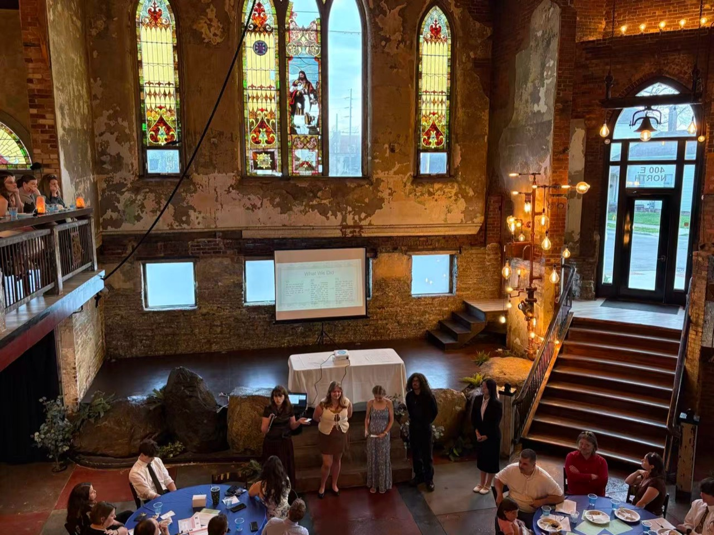
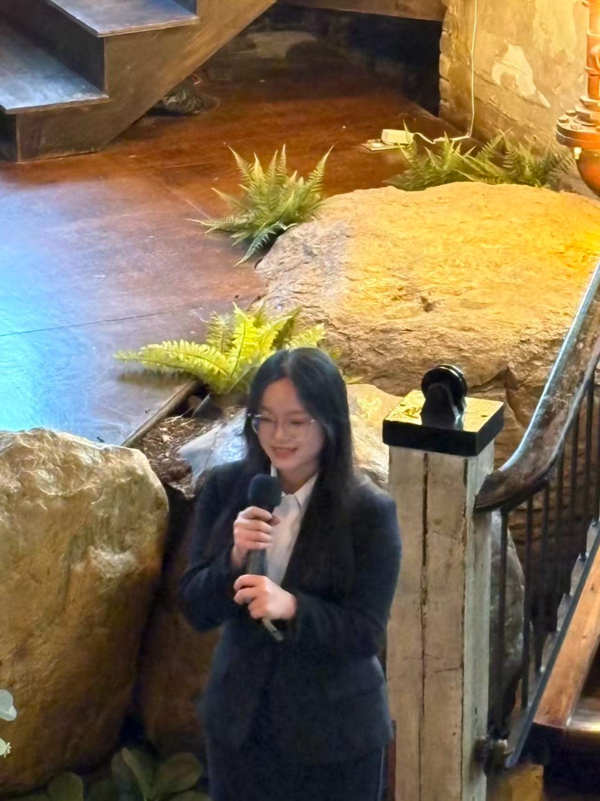
Program feedback
The program notice identifies Our Closet as the “winning project”, based on student and staff scoring.
The feedback report highlights the team’s collaboration and growth. Students rated the group highest across the report’s categories, with praise for clarity, organization, and engagement.
An area for growth: stronger communication and shared understanding at the start of the project.
The full notice and project evaluation are available below.
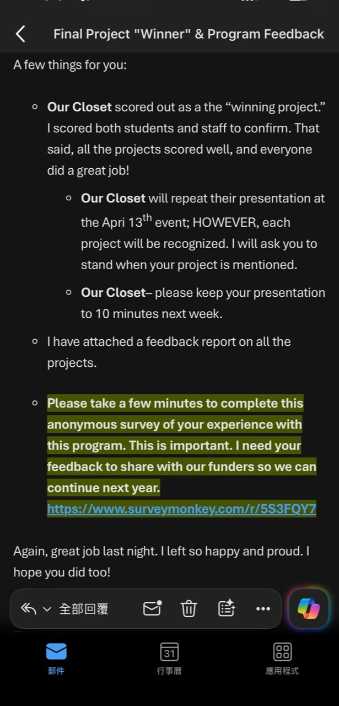
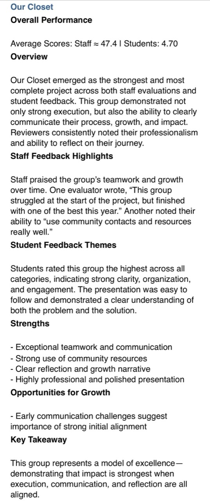
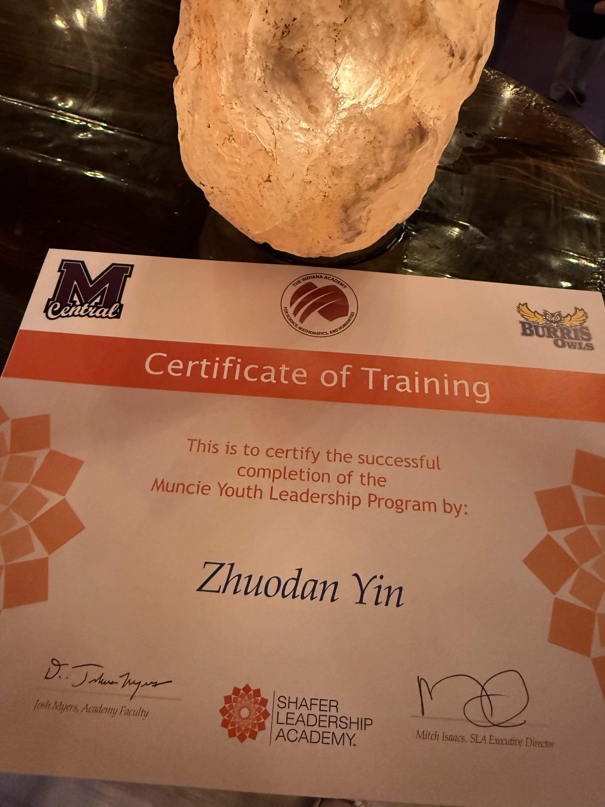
Program completion
My Certificate of Training recognizes successful completion of the program through Shafer Leadership Academy.
Name on certificate: Zhuodan Yin
Portfolio name: Zaria Yin
07 / The original materials
Early proposals and the Our Closet presentation document how the project took shape.
Our Closet · 16-slide planning presentation
The slides explain the mission, goals, potential obstacles, proposed solutions, and planned timeline for a school clothing closet.
View presentation on CanvaThese slides record project plans. Collection totals and photographs are documented in the results section.
Before settling on Our Closet, our group explored ideas around food access, children’s support, and transportation. These photographed drafts preserve that early discussion, including a proposal titled Project Forward Food.
The drafts describe early ideas and proposed activities. Our Closet’s completed work and collection totals appear in the results section.


08 / Explore further
A concise project brief, original presentation, project photographs, and the program that brought the team together.
Read the team’s 13-slide results and reflection in view-only mode.
A print-friendly overview of the purpose, my contributions, and team results.
Explore the project’s social account.
Learn about the Muncie Youth Leadership Program.